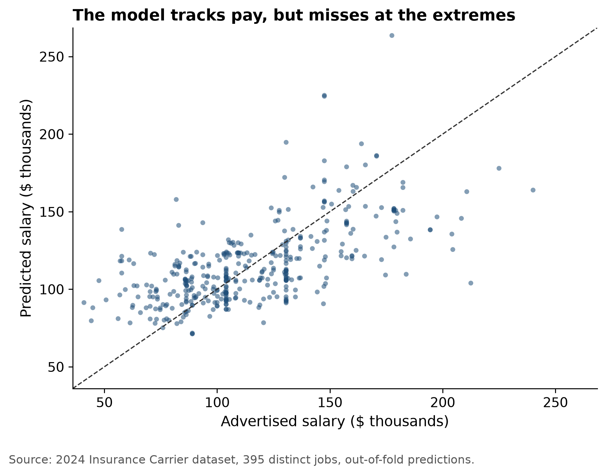
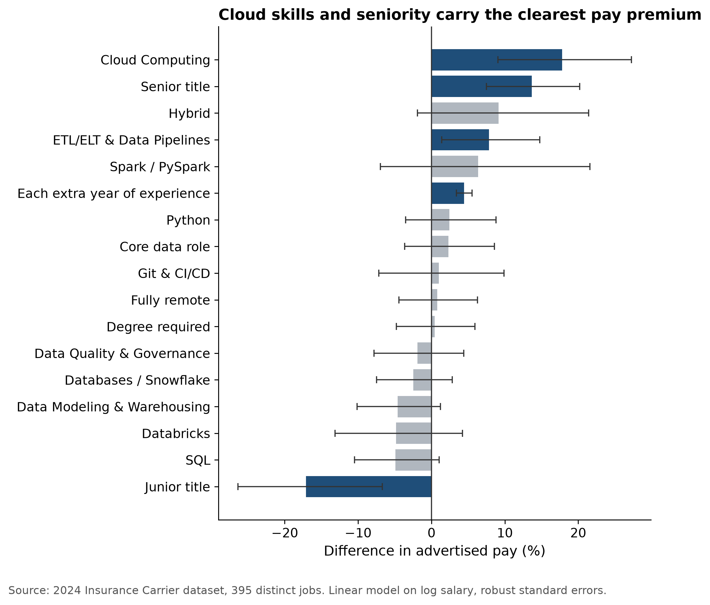

| Step | Postings |
|---|---|
| All insurance carrier data postings in the 2024 dataset | 1,908 |
| Postings that state a salary | 1,204 |
| After removing internships | 1,196 |
| Distinct jobs used in the model (repeat listings removed) | 395 |
Predictive Modeling
This page answers the project question with a model. Which skills and job features go with higher pay for data jobs at insurance carriers (NAICS 5241)? A job seeker can use the answer to decide which skill to learn next and to judge whether an advertised salary is fair for what the posting asks.
We used Option A (Regression). It is a linear model that predicts a posting’s advertised annual salary from the skills it asks for, the experience it requires, the seniority of the title and the work arrangement.
The data behind the model
The model uses the full 1,908-post insurance file and not only the 29 Data Engineer postings because 29 jobs with only 13 listing pay is too few to fit a trustworthy model. All of these jobs are in the same data occupation family (government occupation group Data Scientists which includes analysts, engineers and architects) so what drives pay here is a fair guide for a Data Engineer job seeker in the same industry.
Many employers post the same job in dozens of cities with the same title and pay. We kept one copy of each employer, title and salary combination. Without this step the model would mostly learn from a handful of heavily reposted jobs and copies of the same job would show up on both sides of the accuracy test, which makes the model look better than it is.
What the model uses
| Variable | What it captures |
|---|---|
| Advertised salary (what we predict) | Annual salary from the posting. The model works on its logarithm, so each result reads as a percentage difference in pay. |
| 10 skill flags | Whether the posting asks for each of the ten Data Engineering skills from our Skill Gap Analysis, using the same matching rules. |
| Years of experience | Minimum years the posting requires (capped at 15). Missing values were filled with the median and flagged. |
| Senior title / junior title | Title words such as senior, lead, principal, manager or architect, versus junior, associate, entry or assistant. |
| Fully remote / hybrid | Work arrangement, compared with on-site or not stated. |
| Degree required | The posting asks for a bachelor’s degree or higher. |
| Core data role | The posting’s title matched the core data-role list from Step 3. |
Each result compares two otherwise similar postings. For example a posting that asks for cloud skills is compared with one that has the same experience, seniority and other skills but does not ask for cloud.
How we checked it
We tested the model on jobs it had not seen. We split the 395 jobs into five groups and trained on four and predicted the fifth, then rotated through all five and repeated the whole test ten times with different shuffles. The table compares the model with the simplest possible guess which is predicting the middle (median) salary for every job.
| Measure | Salary model | Median guess |
|---|---|---|
| Typical error, MAE (average dollars off) | $21,011 | $27,740 |
| RMSE (penalizes big misses more) | $27,203 | $35,511 |
| R² (share of pay differences explained) | 0.37 | 0.00 |
On jobs it had not seen the model’s typical miss is about $21,011 which is 24% smaller than guessing the median. It explains about 37% of the differences in pay between jobs. That makes it a useful guide to what matters but not an exact salary calculator. The rest of the variation comes from things a posting does not show like the employer’s pay bands, the city and the negotiation.

The model pulls predictions toward the middle. It clearly underestimates the best-paid jobs and overestimates the lowest-paid ones so for a job seeker it is more reliable for typical mid-career postings than for the extremes.
What goes with higher pay

| Feature | Pay difference | 95% range | Clear signal |
|---|---|---|---|
| Cloud Computing | +17.8% | +9.1% to +27.3% | Yes |
| Senior title | +13.7% | +7.5% to +20.2% | Yes |
| Hybrid | +9.1% | -1.9% to +21.4% | No |
| ETL/ELT & Data Pipelines | +7.9% | +1.4% to +14.8% | Yes |
| Spark / PySpark | +6.4% | -7.0% to +21.6% | No |
| Years of experience | +4.5% | +3.4% to +5.5% | Yes |
| Python | +2.4% | -3.5% to +8.8% | No |
| Core data role | +2.3% | -3.6% to +8.6% | No |
| Git & CI/CD | +1.0% | -7.2% to +9.9% | No |
| Fully remote | +0.8% | -4.4% to +6.3% | No |
| Degree required | +0.4% | -4.8% to +5.9% | No |
| Data Quality & Governance | -1.9% | -7.8% to +4.4% | No |
| Databases / Snowflake | -2.5% | -7.5% to +2.8% | No |
| Data Modeling & Warehousing | -4.6% | -10.1% to +1.2% | No |
| Databricks | -4.8% | -13.1% to +4.2% | No |
| SQL | -4.9% | -10.5% to +1.1% | No |
| Junior title | -17.1% | -26.4% to -6.7% | Yes |
What this means for a job seeker
- Cloud computing is the skill with the clearest pay premium. Postings that ask for AWS, Azure or Google Cloud advertise about 18% more than similar postings that do not. Cloud is also one of our team’s two largest skill gaps (team average 1.3 out of 5) so it is the best first skill to invest in.
- Data pipeline skills (ETL/ELT) add about 8%. This is the everyday work of a Data Engineer. The effect is smaller and less certain than cloud (its range starts just above zero) but it points the same way.
- Experience and seniority matter most overall. Each extra year of required experience goes with about 4% more pay. A senior title goes with about 14% more and a junior title with about 17% less. Entry-level offers will sit well below the market median and pay grows quickly in the first years.
- SQL and Python are the entry ticket, not a pay premium. Once the other features are accounted for neither one moves pay by a clear amount. SQL appears in about 52% of these jobs and Python in about 25% including lower-paid analyst roles so they get you hired more than they get you paid more. They are still required.
- Remote work does not cost pay. Fully remote postings advertise about the same as on-site ones (+0.8%) so a job seeker can target remote roles without expecting a pay cut.
- Spark, Databricks, Git and the other skills show no clear effect. Few postings in this sample ask for them (Spark appears in about 3% of jobs) so the model cannot tell their effect apart from zero. That is a gap in the evidence and not proof that they do not matter.
What-if: pay for a job seeker profile
The model can price a specific kind of posting. Each row below is a Data Engineer type posting (core data role, bachelor’s degree, fully remote and no senior or junior title unless the row says so) that asks for SQL and Python. We then add skills and experience one step at a time.
| Posting asks for SQL and Python, plus… | Predicted advertised salary |
|---|---|
| Entry level: junior title, 1 year | $74,866 |
| 2 years of experience | $94,350 |
| 2 years, plus cloud | $111,160 |
| 2 years, plus cloud and pipelines | $119,902 |
| 5 years, plus cloud and pipelines | $136,711 |
| Senior title, 7 years, cloud and pipelines | $169,592 |
For a graduate with about two years of relevant experience adding cloud and pipeline skills moves the predicted advertised salary from about $94,350 to about $119,902. That is roughly $25,552 more a year. These are estimates of what employers advertise with a typical error of about $21,011 and not guaranteed offers.
Limitations of the model
- It shows association, not cause. Postings that ask for cloud skills may also be at better-paying teams. Learning cloud makes a candidate eligible for those postings and does not raise pay on its own.
- A few employers dominate. UnitedHealth Group (with its Optum unit) and Humana posted the largest share of the jobs so their pay practices shape the results.
- Advertised pay is not offered pay. Only postings that state a salary are included and the figure is usually the midpoint of the advertised range.
- It is less accurate for employers it has never seen. When whole employers are left out of training the typical miss grows to about $23,000.
- Rare skills cannot be measured well. Spark, Databricks and Git appear in too few postings for the model to estimate their effect.
- It covers 2024 insurance carriers only. Results may not carry over to other industries or later years.